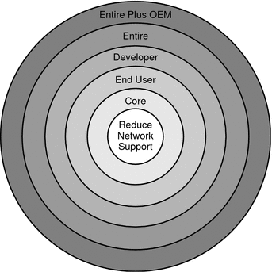

Document Information
Preface
Part I Overall Planning of Any Solaris Installation or Upgrade
1. Where to Find Solaris Installation Planning Information
2. What's New in Solaris Installation
3. Solaris Installation and Upgrade (Roadmap)
4. System Requirements, Guidelines, and Upgrade (Planning)
System Requirements and Recommendations
Upgrade Planning
Planning Network Security
Locale Values
Platform Names and Groups
x86: Partitioning Recommendations
How to Find the Version of the Solaris OS That Your System Is Running
5. Gathering Information Before Installation or Upgrade (Planning)
Part II Understanding Installations That Relate to GRUB, Solaris Zones, and RAID-1 Volumes
6. x86: GRUB Based Booting for Solaris Installation
7. Upgrading When Solaris Zones Are Installed on a System (Planning)
8. Creating RAID-1 Volumes (Mirrors) During Installation (Overview)
9. Creating RAID-1 Volumes (Mirrors) During Installation (Planning)
Glossary
Index
|
Allocating Disk and Swap Space
Before you install the Solaris software, you can determine if your system has
enough disk space by doing some high-level planning.
General Disk Space Planning and Recommendations
Planning disk space is different for everyone. Consider allocating space for the following
conditions, depending on your needs. Table 4-3 General Disk Space and Swap Space PlanningConditions for Space Allocations |
Description |
|---|
File systems |
For each file system
that you create, allocate an additional 30 percent more disk space than you
need to enable you to upgrade to future Solaris versions. By default,
the Solaris installation methods create only root (/) and /swap. When space is
allocated for OS services, the /export directory is also created. If you
are upgrading to a major Solaris release, you might need to reslice your
system or allocate double the space that you need at installation time. If
you are upgrading to an update, you could prevent having to reslice your
system by allocating extra disk space for future upgrades. A Solaris update release
needs approximately 10 percent more disk space than the previous release. You can
allocate an additional 30 percent of disk space for each file system to
allow space for several Solaris updates. |
The /var file system |
If you intend to
use the crash dump feature savecore(1M), allocate double the amount of your physical
memory in the /var file system. |
Swap |
The Solaris installation program allocates a
default swap area of 512 MB under the following conditions:
By default, the Solaris
installation programs allocate swap space by placing swap so that it starts at
the first available disk cylinder (typically cylinder 0 on SPARC based systems). This
placement provides maximum space for the root (/) file system during the
default disk layout and enables the growth of the root (/) file
system during an upgrade. If you think you might need to expand the
swap area in the future, you can place the swap slice so that
it starts at another disk cylinder by using one of the following methods.
For an overview of the swap space, see Chapter 20, Configuring Additional Swap Space (Tasks), in System Administration Guide: Devices and File Systems. |
A server that is
providing home directory file systems |
By default, home directories are usually located in
the /export file system. |
The Solaris software group you are installing |
A software group is
a grouping of software packages. When you are planning disk space, remember that
you can add or remove individual software packages from the software group that
you select. For information about software groups, see Disk Space Recommendations for Software Groups. |
Upgrade |
|
Language support |
For example, Chinese,
Japanese, or Korean. If you plan to install a single language, allocate approximately
0.7 GB of additional disk space for the language. If you plan
to install all language supports, you need to allocate up to approximately
2.5 GB of additional disk space for the language supports, depending
on the software group you install. |
Printing or mail support |
Allocate additional space. |
Additional
software or third-party software |
Allocate additional space. |
Disk Space Recommendations for Software Groups
The Solaris software groups are collections of Solaris packages. Each software group includes
support for different functions and hardware drivers.
For an initial installation, you select the software group to install, based on the functions that you want to perform on the system. For an upgrade, you must upgrade to a software group that is installed on the system. For example, if you previously installed the End User Solaris Software Group on your system, you cannot use the upgrade option to upgrade to the Developer Solaris Software Group. However, during the upgrade you can add software to the system that is not part of the currently installed software group.
When you are installing the Solaris software, you can choose to add or
remove packages from the Solaris software group that you selected. When you
are selecting which packages to add or remove, you need to know
about software dependencies and how the Solaris software is packaged. The following figure shows the grouping of software packages. Reduced Network Support contains
the minimal number of packages and Entire Solaris Software Group Plus OEM Support
contains all the packages. Figure 4-1 Solaris Software Groups Table 4-4 lists the Solaris software groups and the recommended amount of disk space
that you need to install each group.
Note - The disk space recommendations in Table 4-4 include space for the following items.
You might find that the software groups require less disk space than the
amount that is listed in this table.
Table 4-4 Disk Space Recommendations for Software GroupsSoftware Group |
Description |
Recommended Disk Space |
|---|
Entire Solaris Software
Group Plus OEM Support |
Contains the packages for the Entire Solaris Software Group
plus additional hardware drivers, including drivers for hardware that is not on the
system at the time of installation. |
6.8 GB |
Entire Solaris Software Group |
Contains the packages for
the Developer Solaris Software Group and additional software that is needed for servers. |
6.7
GB |
Developer Solaris Software Group |
Contains the packages for the End User Solaris
Software Group plus additional support for software development. The additional software development support includes
libraries, include files, man pages, and programming tools. Compilers are not included. |
6.6 GB |
End
User Solaris Software Group |
Contains the packages that provide the minimum code that
is required to boot and run a networked Solaris system and the Common
Desktop Environment. |
5.3 GB |
Core System Support Software Group |
Contains the packages that provide the
minimum code that is required to boot and run a networked Solaris system. |
2.0
GB |
Reduced Network Support Software Group |
Contains the packages that provide the minimum code
that is required to boot and run a Solaris system with limited network
service support. The Reduced Network Support Software Group provides a multiuser text-based
console and system administration utilities. This software group also enables the system to
recognize network interfaces, but does not activate network services. |
2.0 GB |
|